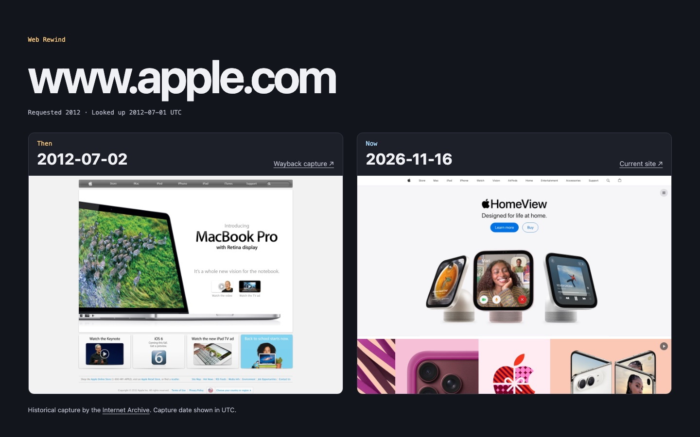

Give a website a date.
Pick a moment in time and open the closest copy saved by the Wayback Machine.
Apple in 2012 and 2026
View side-by-side comparison ↗
Pick a moment in time and open the closest copy saved by the Wayback Machine.
